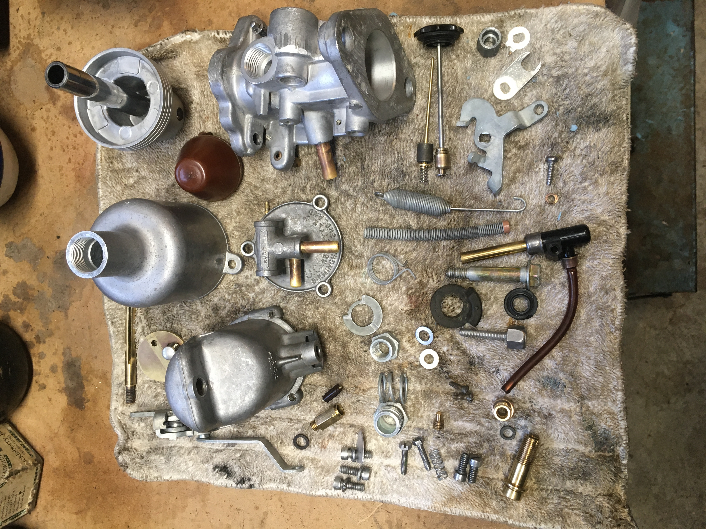
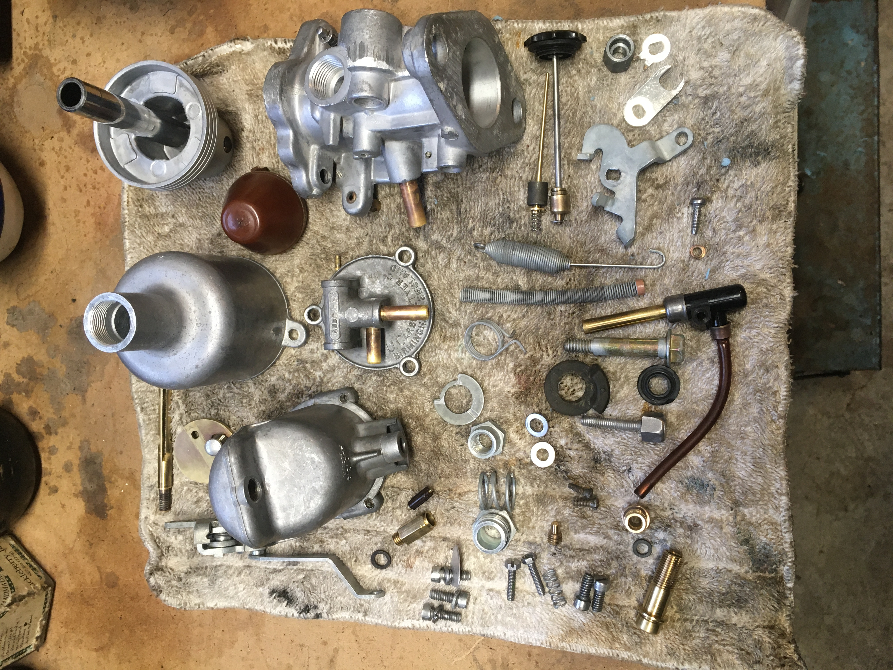

I am the third owner of this 1972 MG Midget round wheel arch mk III. The first owner's daughter drove it back and forth to college and accumulated about 80,000 miles. Then the first owner took the engine out of the car and took it apart. After a few years he sold the car and all the parts to the second owner, who stored all of it before selling it to me in 1996 for $400.

The car may have been in pieces, but nothing was missing. Despite the changes in ownership, vagaritites of long term storage, and two cross-country moves, all of the parts were present amongst the collection of cardboard boxes. Gradually, the parts were restored and made ready to go back on the car. The engine is back in one piece, having had a full rebuild with 0.020" oversized pistons fitted. The transmission was a great unknown and so was disassembled and inspected, and suspect parts replaced, an improved front oil seal fitted, and the spacer added on the 1st/2nd gear selector rod to prevent the known issue of the box getting stuck in second gear.

Freshly rebuilt with new bushings, bearings, laygear, and "seals."
The car is almost completely rust-free, with only benign surface rust on suspension parts such as the rear leaf springs. That is being addressed as the components are renewed or replaced (as were the tired springs). The battery box suffered from some acid damage, but that sheet metal was replaced when I had the car repainted (in the original color). More parts had to come off for the paint job, but all of those have now been polished and reinstalled.
Ancillary components such as the alternator, carburettors, fuel pump, wiper motor, horns, and heater box have been disassembled, stripped, cleaned, lubricated, reassembled, tested, and repainted as needed.

The rectifier end of the alternator (before sandblasting and treatment of contacts), wiper motor, and rear brakes (before and after).
 
 
SU HS2 carb, before, during, and after. They got new jets, throttle discs, float bowl needles and seats, piston return springs, and gaskets.
The repainted engine with ceramic-coated carb heat shield and exhaust header, the rebuilt front stub axles, and horns. Yes this tiny car has two horns.
While the engine and transmission were out, it was slightly easier to replace all the brake lines. This was also the time to rebuild the front stub axles and switch to tapered wheel bearings, rebuild the front and rear brakes, and replace the rear halfshaft bearings and seals. All of the bushings and pads were replaced with polyurethane. I made sure to get as much as possible done, and then reinstalled the engine and trransmission. After so many decades of being apart (and maybe because I had been subconsciously preparing for so long) the power unit went in very smoothly.

Before you put the engine back in, don't forget...everything. My son adjusts the tilt as the engine and transmission go back into the car after 30+ years.
After that, all that was left was to hook up the speedo cable, oil pressure sensor and temperature sensor, and install the radiator, clutch slave cylinder and driveshaft. Cooling system hoses are available new but I had to custom bend the smaller hoses for the charcoal canister that handles crankcase ventilation, carb overflow and fuel tank vapors. There was the inevitable troubleshooting of the Lucas electrical system (mostly dirty and/or failed connectors and a bad ground that prevented the headlights and front signals from lighting). All sorted!

The car is whole for the first time in 30 years. And it runs!
Final items remaining on the to-do list are the installation of a new top (which will likely never be used but which I already have on hand), having the alignment checked, and sorting out an incorrect VIN digit on the title so the car can be registered. I had only read about how fun the car was to drive but I never knew. As of July 2024, now I know!